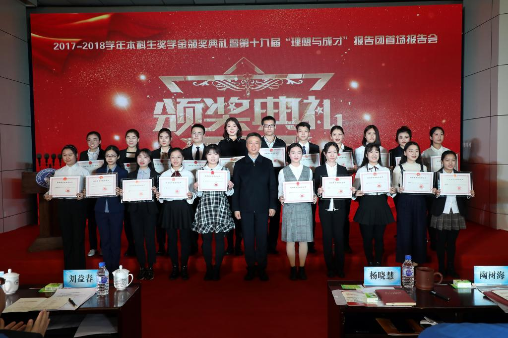

我校2017-2018学年本科生奖学金颁奖典礼暨第十九届“理想与成才”报告团首场报告会圆满落幕
12月22日，党委学生工作部、学生处组织召开了2017-2018学年本科生奖学金颁奖典礼暨第十九届“理想与成才”报告团首场报告会。中共长春市委宣传部高教处处长陶树海、吉林省教育厅民族教育处副处长隗峰、东北师范大学党委书记杨晓慧、校长刘益春、党委副书记王延、党委副书记兼副校长马晓燕，副校长常青、徐海阳，校长助理薛利锋以及学校相关职能部门负责人，各学院（部）党委书记、院长，学生工作组成员，本科生代表和获奖学生家长代表等400余人参加了现场活动。同时学校3670名2018级本科生分别在两校区22个分会场同步收看典礼直播，近4000人通过手机收看直播。
典礼上，刘益春发表讲话，充分肯定了学校设立奖学金对培养学生德、智、体、美、劳全面发展的重要意义，高度赞扬了“理想与成才”报告团多年来在全校学生中发挥的示范引领作用。同时，他结合新时代新要求对全校学生提出三点殷切期望，一是希望广大学生树立正确的价值观和人生观，他鼓励学生要在学校“创造的教育”理念下，培养批判精神，养成反思习惯，培养自主学习能力，明确人生规划，有理想与人生目标，打好人生底色，“扣好人生第一粒扣子”；二是希望学生在学习中坚持追求真理，做“真学问”，在做中学、在学中做，将理论融入实践，打下扎实的知识基础，迈稳步子、久久为功，成为新时代教育家、科学家；三是希望学生能“为天地立心，为生民立命，为往圣继绝学，为万世开太平”，成为心有大我、有责任担当的中国特色社会主义事业的合格建设者和可靠接班人。
